밀리터리 잡담 - 이란을 폭격한 이스라엘 조종사의 운명
게시: 2024-07-18T06:30:42+09:00
<이스라엘 F-35가 이란까지 갈 수 있나?> 무장을 탑재한 F-35의 내부 연료탱크만을 이용한 전투반경은 약 1200km. 이스라엘과 이스파한 사이의 거리는 약 1500km. 약 300km 모자라기는 하지만 JASSM 같은 장거리 미쓸을 이용하면 충분히 타격은 가능. 이스라엘이 JASSM은 가지고 있지 않은 것으로 알려져 있지만 뭐 상대는 이스라엘과 미국이니. 실제로 이스라엘은 이미 1981년 6월에 이라크 바그다드 인근의 핵시설을 폭격한 사례가 있음. 소위 Operation Opera. 스텔스도 아닌 F-16A 8대에 비유도 폭탄과 외부 연료탱크를 잔뜩 달고, 엄호용 F-15A 6대를 대동하여 수행한 작전. 공중 재급유 없이 요르단과 사우디 국경을 아슬아슬하게 타고 넘어 갔고, 이라크 영공에 들어가서는 30m 초저고도로 침투. 투하된 16발 중 8발이 핵시설에 명중한 것으로 평가됨.
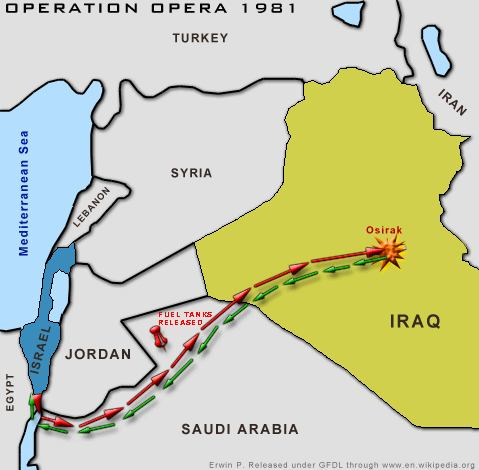
이 작전에서 흥미로운 점 몇가지. 1) 이스라엘 공군기들은 처음엔 홍해쪽으로 빠져나와 아카바 만에서 요르단과 사우디 국경선을 따라 침투. 그런데 하필 그때 아카바 만에는 휴가 중인 요르단 국왕 후세인이 요트를 타고 있었고, 후세인 국왕은 그 F-16들의 날개에서 이스라엘 마크를 보았음. 똑똑했던 후세인은 자신의 위치와 F-16들의 비행 방향을 보고는 이들의 타겟을 제대로 짐작. 즉시 부하들에게 이라크의 사담 후세인에게 통보하도록 했는데, 통신 장애로 인해 이라크에는 아무 경고가 끝내 가지 못함. 2) 이스라엘 공군기들은 요르단-사우디 국경을 오락가락 넘나들며 날았는데, 요르단 관제탑에다가는 사우디 억양의 아랍어로 '우린 사우디 공군기인데 실수로 국경을 넘었다, 미안미안, 돌아갈게'라고 하고, 사우디 관제탑에게는 '우린 요르단 공군기인데 실수로..' 전술을 구사. 3) 그 편대의 조종사들 중 최연소는 당시 27세의 Ilan Ramon이었는데 이 양반은 나중에 NASA 우주비행사가 됨. 그러나 2003년 우주왕복선 Columbia 사고 때 사망. 마지막 사진이 당시 대기권에 재진입하다 부서지기 시작하는 컬럼비아호. 아래쪽 날개에 비정상 형상이 보임.
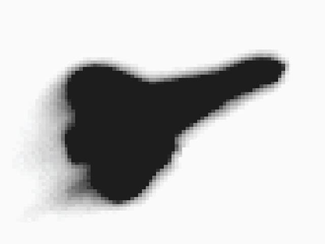
<영화 The English Patient에 나온 폭탄?> 그 영화에서 인상적이었던 장면이 영화 끝부분 폭탄 해체 장면에서 뇌관이 폭탄 앞부분이나 꼬리 부분이 아니라 중간에 있었던 것. 사진1의 He-111 폭격기 아래에 달린 대왕폭탄이 SC1000. 1톤이 넘는 이 대형폭탄도 뇌관이 몸통을 가로지르는 위치에 있었다고 함. 요즘도 간간히 불발탄이 발견되는 이 폭탄의 당시 독일군 내에서의 별명은 Hermann. 뚱뚱한 헤르만 괴링을 딴 별명이라고.
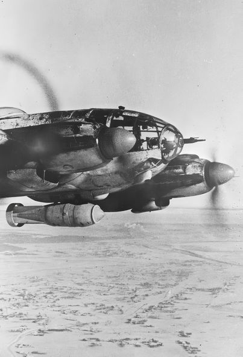 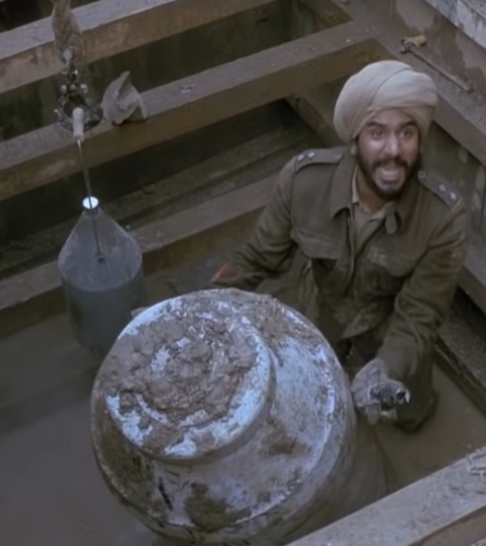 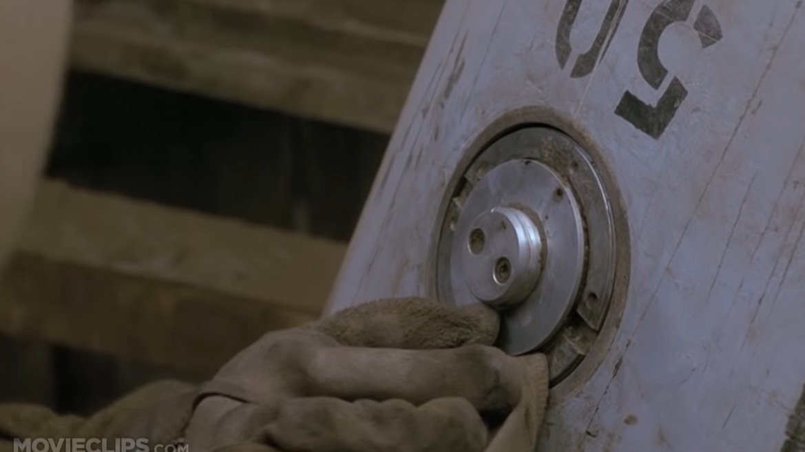 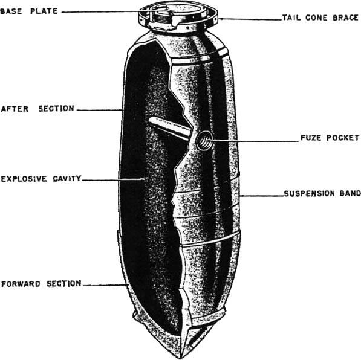
<폭격기가 먼저일까 전투기가 먼저일까> 원래 최초 군용기는 정찰기. 그 다음에 나온 것이 폭격기. 손으로 수류탄 집어던지는 수준이 아닌, 목적을 가지고 설계된 역사상 최초의 폭격기는 1913년 도입된 영국 Bristol T.B.8 (사진1).
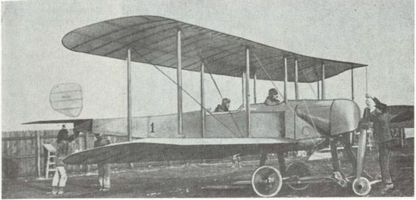
초기 정찰기들도 적기를 만나면 상대에게 권총이나 소총을 쏘기도 했지만 대부분은 서로 경례를 하고 헤어짐. 그러나 저렇게 폭격기가 나오니 저건 경례하고 헤어질 수가 없어서 그걸 쏘아 떨어뜨리기 위해 기관총을 장착. 그래서 최초의 전투기라고 불릴 수 있는 프랑스 Voisin III가 도입된 것은 폭격기보다 1년 느린 1914년. 전방 좌석에 기관총을 장착 (사진2). 나오자마자 위력을 발휘하여 1914년 10월 독일 정찰기 Aviatik B.I를 격추.
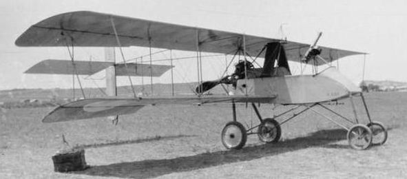
그러니까 군용기의 역사는 정찰기 --> 폭격기 --> 전투기로 이어진 셈. 그런데 이제 지상 폭격은 모두 드론과 미쓸로만 하네. 이러다간 폭격기가 없어질 판국...이지만 미쓸도 공중에서 쏘면 더 멀리서 쏠 수 있으니 그래도 없어지진 않을 듯. <1940년, 북대서양에서 임무 중인 초계기 안에서 밥먹는 사진> 로열에어포스의 Short Sunderland (사진1)는 원래 부유층의 편안한 해외 여행을 위해 개발된 S.23 Empire flying boat를 개조해서 만든 해양 초계기. 그러다보니 로열에어포스의 의도와는 달리 화장실은 물론 주방(사진2)까지 달려있고 저렇게 기내에 식당이 있음 (사진3).
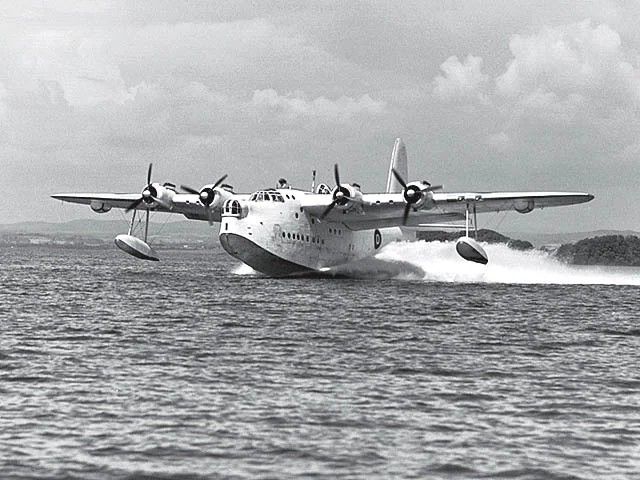 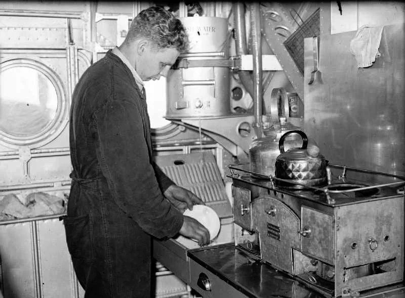 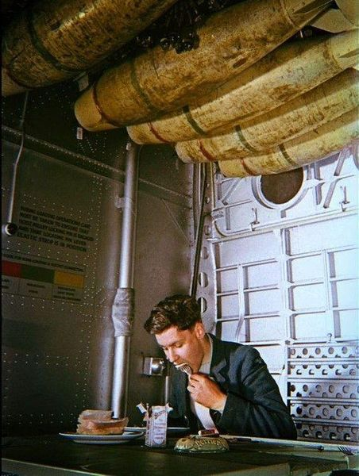
근데 저렇게 밥먹는 승무원 머리 위에 저게... 맞음. 폭탄임. 항력을 줄이기 위해 평상시는 저렇게 폭탄 rack이 기체 내로 들어와 있다가, 적 잠수함을 발견하거나 하면 저 창이 열리면서 폭탄 rack이 밖으로 밀려나가 날개 밑에 위치하게 됨 (사진4).
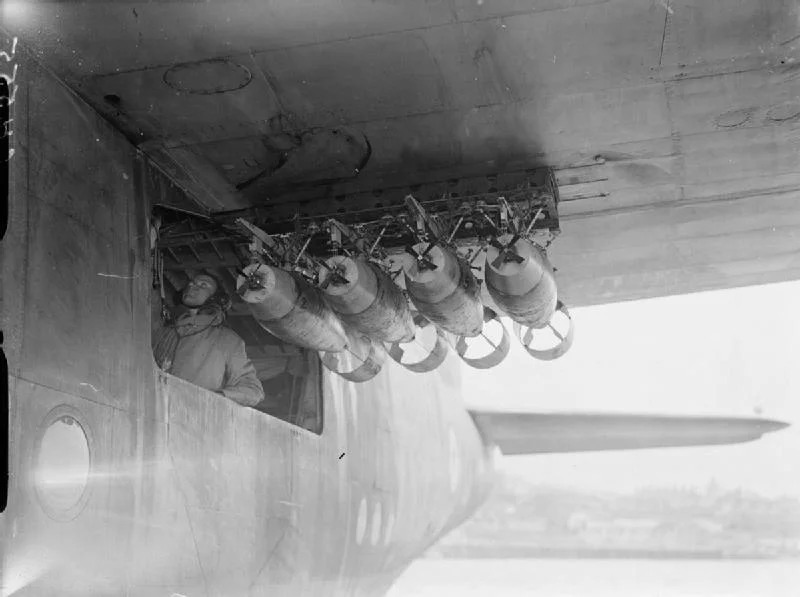
<나약한 미해군> "뭐? F-35B의 수직 노즐 분사열 때문에 갑판이 상할까봐 비싼 특수 표면 처리를 했다고?? 뭐하러 그런데 돈을 써?" 로열네이비에서 팬텀을 운용하던 HMS Ark Royal (R09, 5만4천톤, 31노트)는 워낙 짧은 갑판 때문에 앙각을 높이고자 팬텀의 nose landing gear를 길게함. 그랬더니 아뿔사, 이함할 때 쓰는 애프터버너 불꽃이 갑판에 그대로 닿음! 저렇게 애프터버너 불꽃이 갑판을 녹이는 것을 막고자 그냥 갑판에 강철판을 깔고 팬텀이 이함하고 나면 거기에 호스로 물을 뿌렸다고.
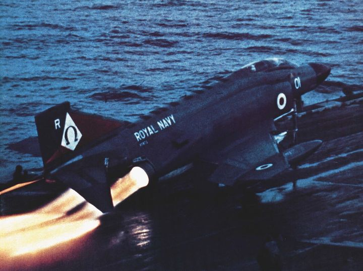
<F-35B의 할아버지> Convair Model 200. 1970년대 미해군이 구상하던 경항모인 Sea Control Ship의 함재기용으로 구상됨. F-35C처럼 CTOL도 있고 F-35B처럼 VTOL도 있었음. 결국 취소되었으나 이것이 있었기에 F-35B가 나옴.
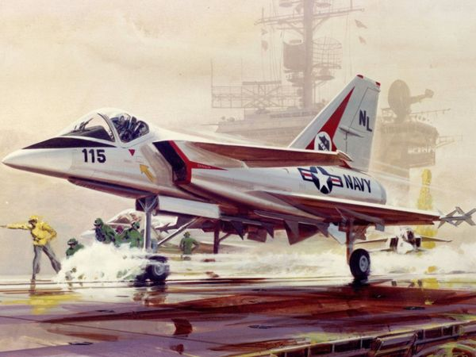 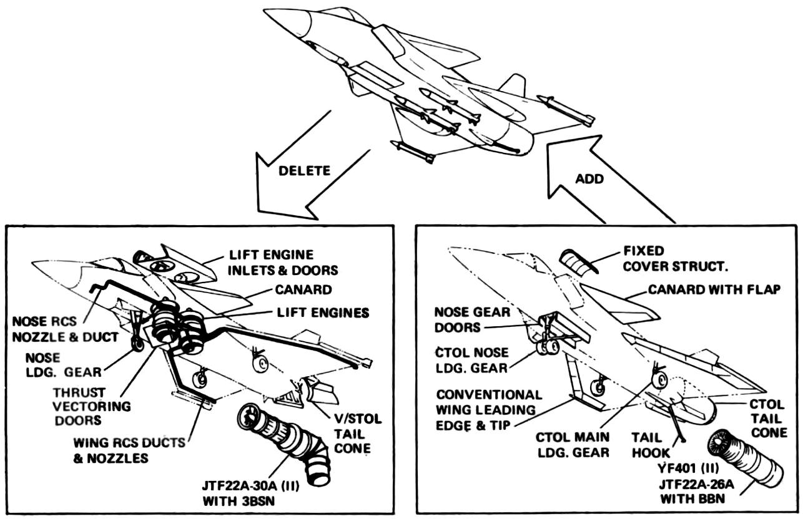 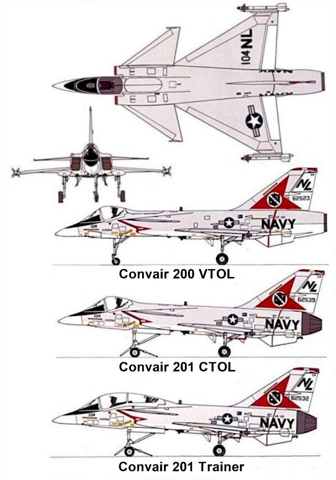 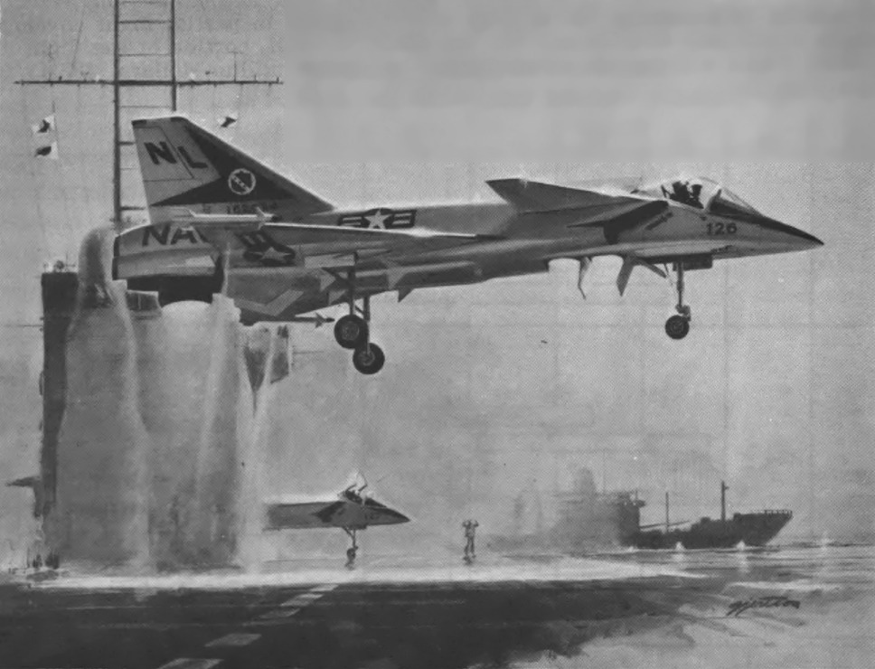
<이착함만 제대로 해도 성공> 1945년 오대호 미시간 호수 위의 훈련용 항모 USS Sable (IX-81)에서 발생한 F6F Hellcat 착함 사고. WW2 기간 중 해군항공대에 조종사로 지원했던 훈련생 중 생각보다 많은 수가 저런 이착함 훈련 중 죽거나 다쳤다는데 어디서 읽은 쪽글에 따르면 1/3에 가까운 수라고. 확인은 못 해봤음.
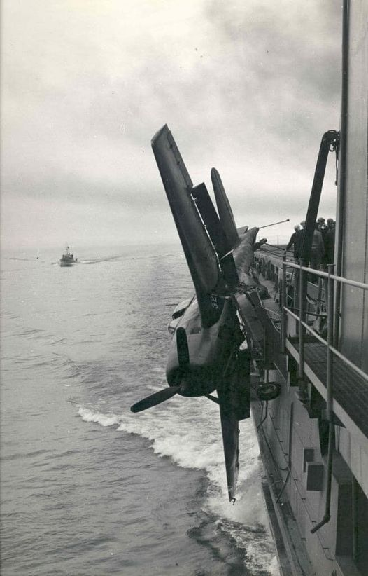
<낙장불입> 1978년 미해군이 실수로 여분의 어뢰 기만 장치 3기를 고철상에 판매. 이 장치는 2급 기밀로 분류되는 장비였는데, 고철로 판매된 가격은 $36.5. 나중에야 실수를 깨달은 미해군은 $200 줄테니 되팔라고 협상. 고철상은 15만불을 요구. 결과적으로 미해군은 해당 장비가 '자발적으로 반환되었다'라고 발표.
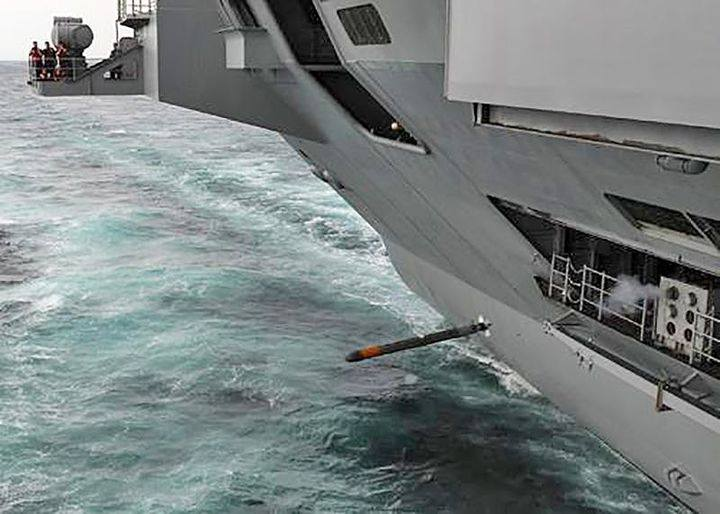
<드라마 '삼체'에 나오는 400년의 시간> 보신 분은 보셨겠지만 Netflix 시리즈 '삼체'에는 지구를 침공하는 외계인이 400년 후에 도착하는데, 지금 당장은 넘사벽 기술을 가진 외계인들인 삼체인들이 정작 지구인들을 두려워 함. 이유는 지구인들의 기술 발전 속도 때문에 자신들이 지구에 도착하는 400년 후에는 기술력이 역전되어 있을 것이라고 믿기 때문. 그게 엄살이 아님. 가령 아래 사진 속 함재 핵폭격기인 A5 Vigilante는 디지털 컴퓨터를 장착한 최초의 항공기 중 하나. 기수에 장착된 AN/ASB-12 항법 및 폭탄 조준용 레이더는 최초의 헤드업 디스플레이로 데이터를 조종사에게 전달. 비질런티는 프로펠러 전투기 P-51 머스탱의 최초 비행 이후 겨우 18년 후에 나옴.
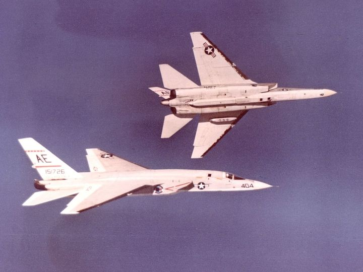